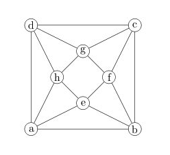
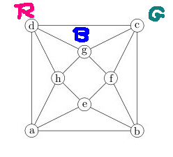
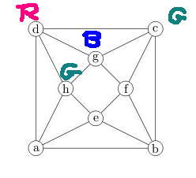
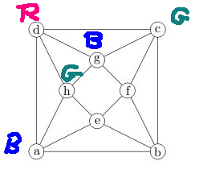
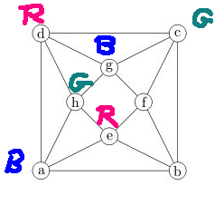
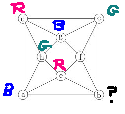

Suppose that we have a graph G. To show that G has chromatic number 4, we needed to do two things. First, we showed a coloring with four colors. Second, we needed to show that four colors were actually required. Often we did this by identifying a subgraph that was known to require four colors e.g. a \(K_4\). But sometimes we needed to use a "try it and see" argument.
For example, consider this graph

Suppose we try to color it with only three colors. Then we can make our choice of colors for the first triangle:

If we examine nodes that are adjacent to the part that's already colored, we have only one way to color h, then a, then e.
  
But then we are stuck, because node b is adjacent to nodes with all three colors.

So we've tried out the hypothesis that 3 colors is enough, and discovered that it didn't work out.
A proof by contradiction uses this sort of argument. We suppose that our claim is false and show that this leads to an impossible situation. The outline is:
Claim: PProof: Suppose not. That is (give the negation of P).
...
X and not X (contradiction)
In a sense, we're creating a fantasy world. We intend to prove P, so obviously we think P is true. But we're assuming it's not. So we're deliberately creating a world that is problematic and we're messing with it until it fails.
Technically, we should end on a literal logical contradiction, "X and not X". However, in practice, it's fine to end with any statement well known to be false (e.g. \(x^2 < 0\)) or a pair of statements well known to be inconsistent (e.g. \(x < 3\) and \(x > 17\)).
Let's use this method to prove that \(\sqrt{2}\) is not rational. This is a very famous proof dating back to at least Euclid (around 3rd century BC).
Before we start, let's clarify some known facts. First, our definition of a rational number says that a real number n is rational if n can be written as \(n = \frac{a}{b}\) where a and b are integers and b is not zero. As we know from grade school, we can put this fraction into lowest terms by removing any factors that a and b share.
Second, we'll need this lemma:
Lemma: an integer n is even if and only if \(n^2\) is even.
We proved one direction near the start of the term, i.e. that the square of an odd number is odd. And it's easy to show that the square of an even integer is even.
Now, let's construct the main proof.
Claim: \(\sqrt{2}\) is not rational.
Proof: Suppose not. That is, suppose that \(\sqrt{2}\) is rational.
The first line tells the reader that we're doing a proof by contradiction. And it's a good time to firm up what the negation of the claim is, if your claim is at all complex. Now, let's use the definition of rational:
Since \(\sqrt{2}\) is rational, we can write it as \(\sqrt{2} = \frac{a}{b}\) where a and b are integers, b is not zero, and a and b do not share any factors.
A simple way to deal with square roots in proofs is to try to get rid of them by squaring.
Squaring both sides of \(\sqrt{2} = \frac{a}{b}\) gives us \(2 = \frac{a^2}{b^2}\).So \(a^2 = 2b^2\).
So \(a^2\) is even.
Now use the lemma:
Since \(a^2\) is even, a must be even. So \(a = 2p\) where p is an integer.Substituting this back into our equation gives us \((2p)^2 = 2b^2\).
Do you feel like we're going around in circles? The problem is that we don't have a clear goal that we're heading for, just something contradictory. The vague goal makes proofs by contradiction harder to write, which is why it's usually better to use a direct or contrapositive proof.
Simplifying \((2p)^2 = 2b^2\) gives us \(2p^2 = b^2\).
So \(b^2\) is even, which means that b is even.
Ok, so what's the contradiction?
We've shown that both a and b are even. But we assumed at the start that they did not share any common factors. So we've found a contradiction.
Proof by contradiction can be very useful for proving certain types of claims where other proof methods would be awkward. A typical example is a non-existence claim, e.g. there is no coloring with 3 colors, there is no fraction equivalent to \(\sqrt{2}\). There's a few situations where proof by contradiction is the only option that works.
However, the method of creating and then destroying a fantasy world is frequently less convincing than a "constructive" proof where you incrementally build up a set of facts. There is even a branch of mathematics that has experimented with building most of standard mathematics without proof by contradiction.
Also, contradiction proofs are easy to start but can be hard to finish, because of the vague goal in the outline. It's easy to end up going around in circles.